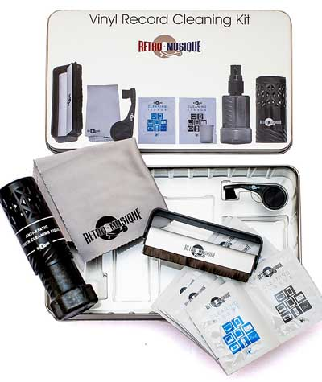

Care And Maintenance
There have already been some followers of Vinyl Records who have asked us via mail if we could make a post on how to clean
Vinyl with simple and easy tricks. Well, it's time for us to share with you all a series of guidelines and advice to
when cleaning your dear and beloved vinyl records.
To start, you need to know that there are disk cleaning machines, but in case you do not want to spend
the money in one of these machines, you don't have to worry because with a little extra effort, we can get results
Very similar cleaning vinyl records by hand.
This is what we would have to do to be able to clean our vinyl records in a simple, fast and uncomplicated way.
But first things first, and first of all we would need to have a clean surface on which to place our disk.
We prefer that it be a smooth and lint-free surface to avoid contaminating the disc with dust or other foreign elements.
For this we recommend that you get a vinyl record cleaning mat.
Once you place the disc securely on an appropriate surface, we can start wet cleaning.
For this, we will need two elements: a cleaning solution and two microfiber cloths (one for cleaning and the other for drying).
But we at the Vinyl Records Blog, we recommend that you get one of these amazing vinyl cleaning kits that
We present you below:
CLEANING KIT FOR RETRO VINYL DISCS

An amazing cleaning kit designed to protect and improve your precious vinyl records and characterized by
contain a series of essential elements for cleaning such as:
- Anti-static carbon fiber brush that eliminates static charge and eliminates dust particles that can accumulate
- Needle cleaning brush
- Deep spray cleaning solution
- Microfiber cloth
- Dry and wet cleaning cloths
ADVANCED CLEANING KIT FOR VINYL DISCS

A pack that comes with great recommendations since it is, nothing more and nothing less, than recommended
by British media such as The Daily Mail, The Guardian and The Telegraph. It contains the following elements:
- Large 250 ml bottle of professional cleaning liquid
- Folding stand for drying
- Two soft and square shaped microfiber cleaning cloths
- Needle cleaning bottle
VINYL STYL ULTIMATE KIT

Incredible vinyl record cleaning kit consisting of the following elements:
- Antistatic cleaning pencil
- Antistatic brush
- Cleaning liquid
- Cleaning brush pen

Once we have chosen the vinyl cleaning kit that interests us most, we would begin the cleaning process step by step.
We summarize it below so you can clean your vinyl record easily and quickly:
1.- Spray the cleaner between two and four times on the surface of the disc avoiding passing over the central label.
2.-Using the first microfiber cloth, gently clean the surface with a circular motion in the opposite direction
to the hands of the clock, following the path of the vinyl grooves and making sure that the fluid penetrates completely
in the slots.
3.-Repeat the second step with a rinse solution in the same way.
4.-Dry the recording surface with a microfiber cloth separated by the same method, in the opposite direction to the
clockwise.
5.-Repeat again until the disk is clean.